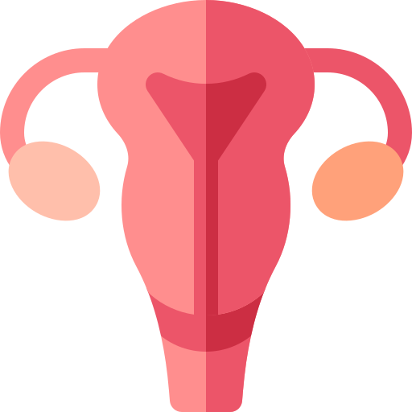
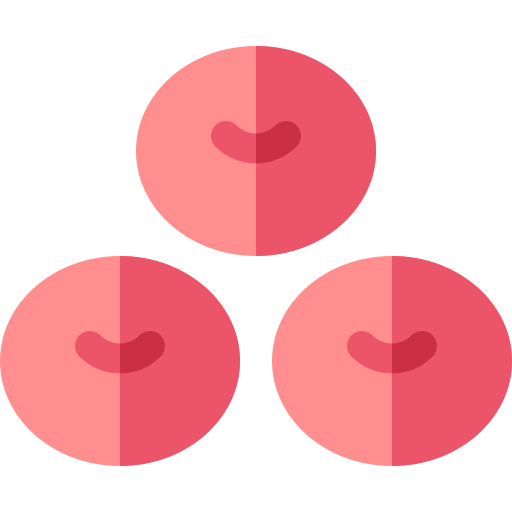

<ion-content>
  <div class="backgroud ion-text-left">

<ion-list class="lista">
  
  <ion-list-header><b>Sente ou possui os sintomas:</b></ion-list-header>
  
  <ion-radio-group>
    <ion-list-header>
      
      <ion-label><b>Sangramento</b></ion-label>
    </ion-list-header>

    <ion-item>
      
      <ion-label>Leve</ion-label>
      <ion-radio slot="start" value="leve" checked></ion-radio>
    </ion-item>

    <ion-item>
      
      <ion-label>Médio</ion-label>
      <ion-radio slot="start" value="medio"></ion-radio>
    </ion-item>

    <ion-item>
      
      <ion-label>Intenso</ion-label>
      <ion-radio slot="start" value="intenso"></ion-radio>
    </ion-item>

    <ion-item>
      
      <ion-label>De escape</ion-label>
      <ion-radio slot="start" value="escape"></ion-radio>
    </ion-item>

  </ion-radio-group>
 
  <ion-radio-group>
    <ion-list-header>
      
      <ion-label><b>Cólicas</b></ion-label>
    </ion-list-header>

    <ion-item>
      
      <ion-label>Fraca</ion-label>
      <ion-radio slot="start" value="fraca" checked></ion-radio>
    </ion-item>

    <ion-item>
      
      <ion-label>Moderada</ion-label>
      <ion-radio slot="start" value="moderada"></ion-radio>
    </ion-item>

    <ion-item>
      
      <ion-label>Forte</ion-label>
      <ion-radio slot="start" value="forte"></ion-radio>
    </ion-item>

  </ion-radio-group>
 
</ion-list>
<div class="rodape ion-text-center">
  <ion-button href="/saude-relacoes" style="font-family: Verdana, Geneva, Tahoma, sans-serif"><b>próximo</b></ion-button>
</div>
  <ion-fab>
    <ion-fab-button>
       
    </ion-fab-button>
  </ion-fab>

  </div>
</ion-content>